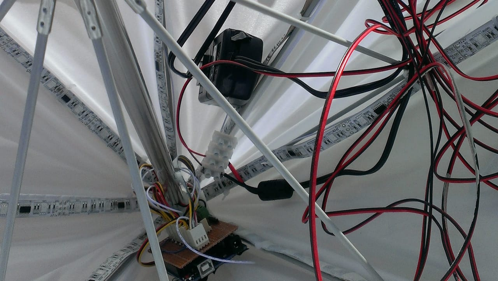
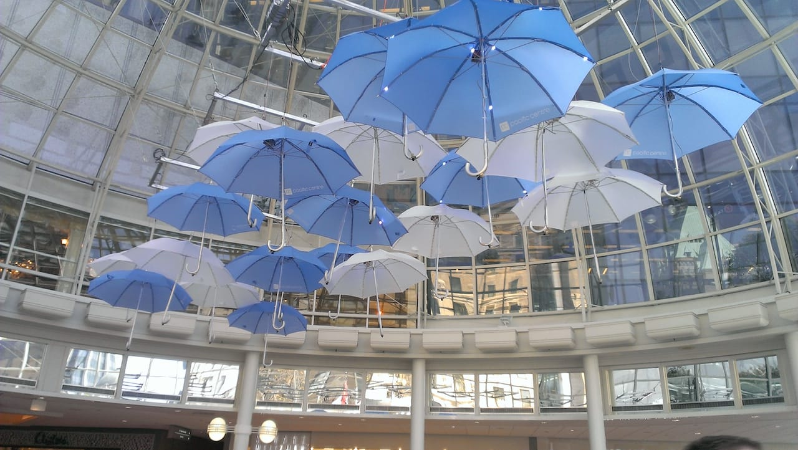

21 Umbrellas was a 3rd Year Interaction Design project at Emily Carr University of Art + Design,
led by Haig Armen,
and installed at Pacific Centre Mall in Vancouver.
The installation consisted of 21 identical umbrellas (go figure) that were hanging 20ft above the entrace to the Pacific Centre.
The umbrellas had strips of 8 LEDs installed along each rib,
controlled and sequenced by an Arduino, that was detecting input from an ultrasonic sensor affixed to the handle of the umbrella, pointing to the ground.
The sensor would detect changes in height and understand that a person was walling underneath... whereupon the LEDs would trigger a sequence that was designed to simulate rain.
My role involved assisiting in the technical installation, consulting on the technical stack, and primarily underwriting the Arduino software.
The project page can be seen at
21Umbrellas.com
and the source code can be found on my
GitHub.

